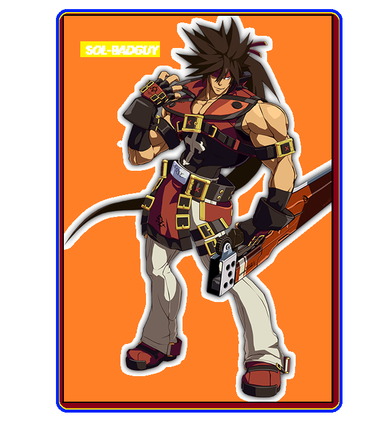
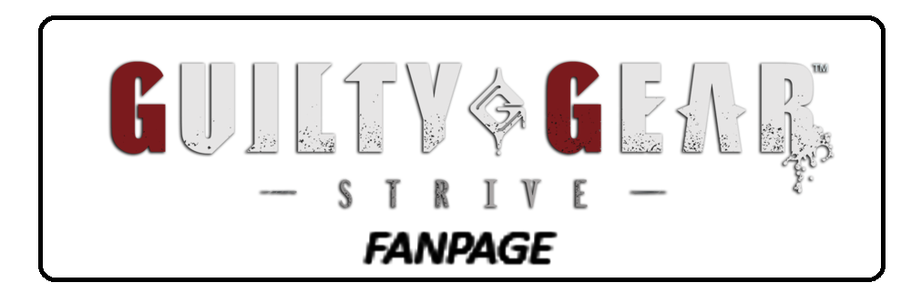

Sol Badguy:
Sol Badguy is a fictional character. Created by Arc System Works,
Sol is a bounty hunter with a mysterious past. Originally named Frederick Bulsara,
he was a scientist involved in the creation of Gears, powerful bioweapons. However,
he rebelled against the project and adopted the name Sol Badguy.
Sol possesses a unique form of magic known as "Fireseal", allowing him to control fire.
He wears a red trench coat and wields a large sword called "Fireseal" or "The Junkyard Dog".
Throughout the series, Sol is often at odds with the main antagonist, Justice, and becomes entangled in conflicts related to Gears and other supernatural forces. His story explores themes of identity, betrayal, and redemption.